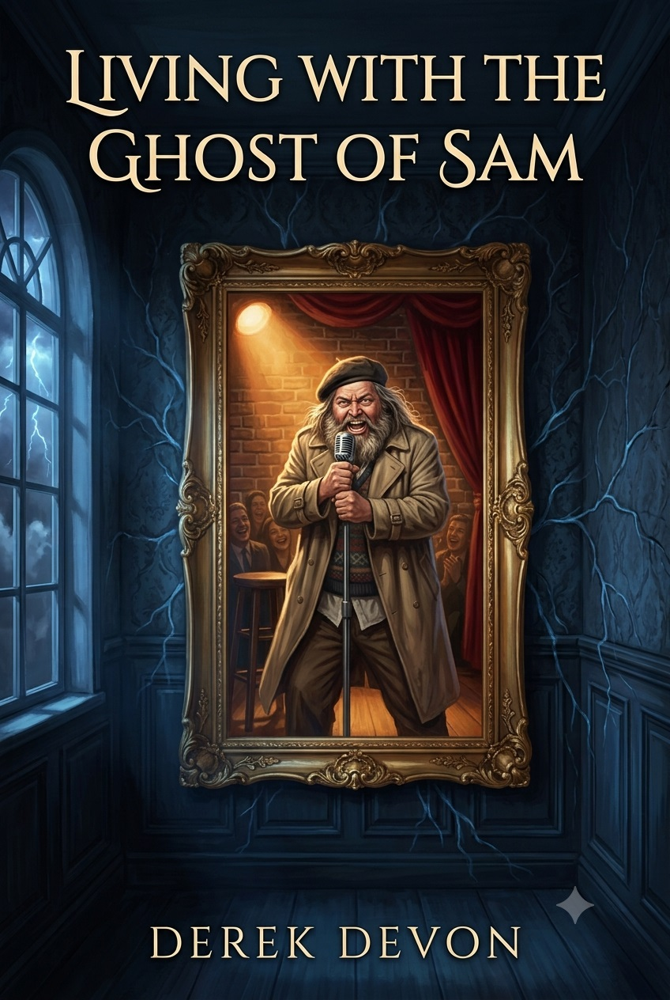

Some inheritances come with a mortgage. His came with a microphone.

Derek Kinison had a corner office, a crumbling marriage, and a five-year plan. Then a letter arrived: his uncle — comedy legend Sam Kinison — left him a mansion.
Ravencrest doesn't behave like other houses. The mirrors have opinions. The thunder has timing. And somewhere between the séance-ready hallways and the world's most judgmental wallpaper, a voice Derek hasn't heard since 1992 is warming up the room.
A supernatural comedy-drama in ten books — about family, second chances, and getting the last laugh. Literally.
A dead uncle, a living house, and the world's strangest job relocation.
The mansion starts keeping Derek up at night — and it isn't the plumbing.
Some guests check in to Ravencrest. Not all of them check out on schedule.
Derek's old boss visits — and the house decides he could use some material.
Ravencrest's technology is decades ahead of its wallpaper. Someone built it that way.
Someone disappears. The house knows more than it's letting on.
The truth behind the mirrors takes the stage. Nothing is what it seemed.
Ravencrest gains a new resident — one nobody remembers inviting.
The endgame begins. The house has been building to something all along.
Every callback pays off. Every mirror answers. The finale, in two parts.
Derek Devon is the pen name of a first-time novelist who spent a long career in the corporate world before deciding the stories rattling around his head deserved better than PowerPoint. He is the author of the seventeen-book science fiction series The Last Axiom and the debut novel A Letter Guide for Rebecca.
Living With the Ghost of Sam is his love letter to the golden age of stand-up comedy, to old houses with opinions, and to everyone who ever lost someone and kept the conversation going.
He lives in Florida, where the thunder is frequent and, he insists, occasionally well-timed.
Be first to know when Book One goes live — release dates, cover reveals, and the occasional message from the mansion.